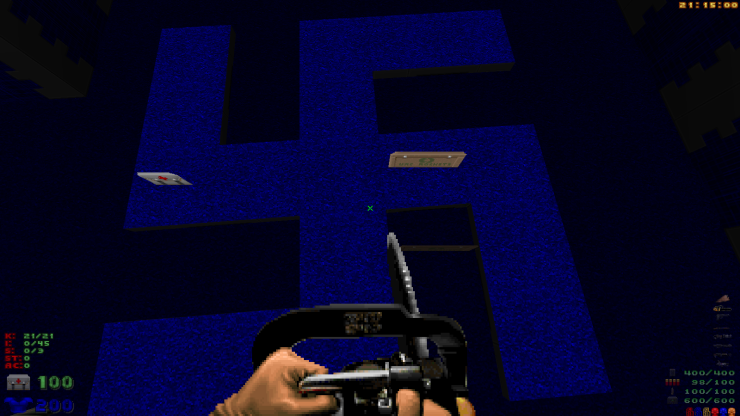

Doom - 1993
Doom (comercializado como DOOM) é um jogo de computador
lançado em 1993 pela id Software e um dos títulos que geraram o gênero
tiro em primeira pessoa. Combinando gráficos 3D com violência
gráfica e personagens 2D, ele tornou-se tão controverso quanto imensamente popular,
com um lançamento em versão shareware que estima-se ter sido jogada por 15 milhões de pessoas.
Além de definir muitos elementos dos games de tiro em primeira pessoa,
Doom estabeleceu uma sub-cultura por popularizar os jogos em rede e permitir expansões
criadas pelos jogadores (arquivos WADs). O sucesso do jogo influenciou o boom de
jogos nos anos 90 até chegar ao ponto desses jogos serem algumas vezes chamados de "clones do Doom".
Mensagens de Saida
Tentar sair do jogo lhe dará uma mensagem aleatória para
ir com "Pressione Y para sair para DOS"
(Ex. Apenas saia. Quando você voltar,
estarei esperando com um bastão. - Não saia ainda - há mais Demônios para brindar!-
Você está tentando dizer que gosta mais do DOS do que eu, certo?)
Swastika

Nas versões lançadas do Doom anteriores à V1.4,
E1M4: Command Control continha um desenho de suástica no chão de uma sala.
De acordo com John Romero, foi colocado lá como uma homenagem ao Wolfenstein 3D.
As versões alfa deste nível, datadas de 2 de abril e 22 de maio de 1993,
incluíam a mesma sala, mas não tinham o design da suástica.
A suástica foi removida na V1.4 do Doom.
A presença de uma suástica teria feito com que Doom fosse banido na Alemanha,
e não apenas restrito a adultos devido à violência gráfica do jogo.
Referência NIN
E4M1: Hell Beneath inclui as letras "NIИ" em uma parte do nível,
uma referência ao Nine Inch Nails, a banda americana de rock industrial.
Além disso, o próximo jogo da id software, Quake,
contaria com som e música do líder da banda, Trent Reznor.
Além disso, a munição para a pistola de pregos
e a super pistola de pregos – um caixote de pregos –
teria a inscrição "NIИ" em cada uma de suas faces.